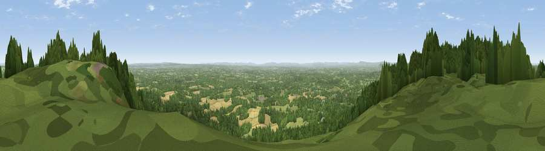

Viewpoint near Coldharbour
#15069 in England · top 3% of its area beats it · near Coldharbour · open accessWhere it is
The exact computed spot (TQ 13861 43117). Click the marker for map links.
Public access: this spot lies on mapped open-access land (CRoW Act 2000) — you may roam here on foot. Computed from Natural England's CRoW access layer and OpenStreetMap rights of way — not the legal definitive map. Always verify locally.
The view, rendered

A 360° render of this exact spot computed from the terrain model, tree cover and land cover — summer colours, afternoon light, calibrated against photographs of famous viewpoints. Real trees, hedges and buildings will differ in detail.
The panorama
Grey silhouette: terrain skyline in each direction (720 bearings, Earth curvature and refraction included). Dashed green: skyline with trees (+15 m) and buildings (+8 m) as obstacles. Blue strip: how far the ground is visible on each bearing.
Where the view opens
Wedge length = distance to the farthest visible ground on that bearing (vegetation-aware). Rings at 10, 25 and 50 km.
What fills the view
60% woodland · 28% grassland · 10% cropland · 2% built-up
Angular shares of the visible panorama (visual magnitude), not map area. Landscape diversity 0.43 (0–1 Shannon).
Key numbers
More beautiful places nearby
The staircase of upgrades: each row has a higher view potential than everything closer. Driving times are estimates from straight-line distance, calibrated against real road routing — check an actual route before setting out.
| Place | Direction | Drive | Score |
|---|---|---|---|
| Viewpoint near Coldharbour | ENE · 1 km | ~3 min | 70.0 |
| Viewpoint near Fernhurst | WSW · 26 km | ~42 min | 75.1 |
| Chanctonbury Ring | S · 31 km | ~48 min | 87.0 |
| Firle Beacon | SE · 51 km | ~72 min | 88.9 |
| Viewpoint near Niton | SW · 93 km | ~117 min | 89.2 |
| Viewpoint near West Bexington | WSW · 168 km | ~190 min | 89.5 |
| The Knoll | WSW · 169 km | ~191 min | 91.0 |
51.17597, -0.37256 · source: osm viewpoint · position refined by local search. Computed location — check access rights before visiting.